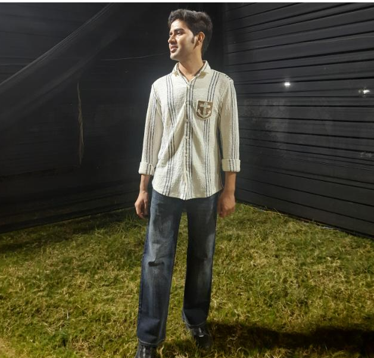

2022 – 2026
B.Sc. (Biology) — Zoology
University of Rajasthan

NEET Zoology Subject Expert · Aspiring Biology / Zoology Faculty
Zoology educator with 5 years of intensive NEET preparation, built through rigorous self-study, NCERT line-by-line mastery, and competitive coaching. Ranked among the top performers in a 50+ student batch. Peers consistently came for doubt-clearing because the explanations worked — diagram-first, concept-before-theory, built for the way NEET aspirants think. Now channelling that depth into a teaching career, starting as a fresher faculty member or content creator, with a clear goal of becoming a specialist Zoology educator in competitive exam coaching.
2022 – 2026
University of Rajasthan
2020
Rajasthan Board
2018
Rajasthan Board
Jan 2021 – Dec 2025
Coaching Institute, Jaipur · Top-Performing Student
May 2026
LearnTube.ai
Understanding of AI tools in educational and healthcare contexts — relevant for EdTech content roles.
May 2026
BeMedic Academy & Skill India Digital
Completed alongside B.Sc. final year — demonstrates the habit of learning beyond the syllabus.
Represented Rajasthan at state-level competitions. The mental discipline of high-stakes match play — composure, quick recovery, performing under pressure — translates directly to managing a live classroom.
Creates detailed pencil sketches of people and faces as a personal art practice, reflecting patience, attention to detail, and a creative eye that supports engaging visual communication in teaching.
Open to: Biology / Zoology Faculty (Fresher) · NEET Content Creator · Academic Internship